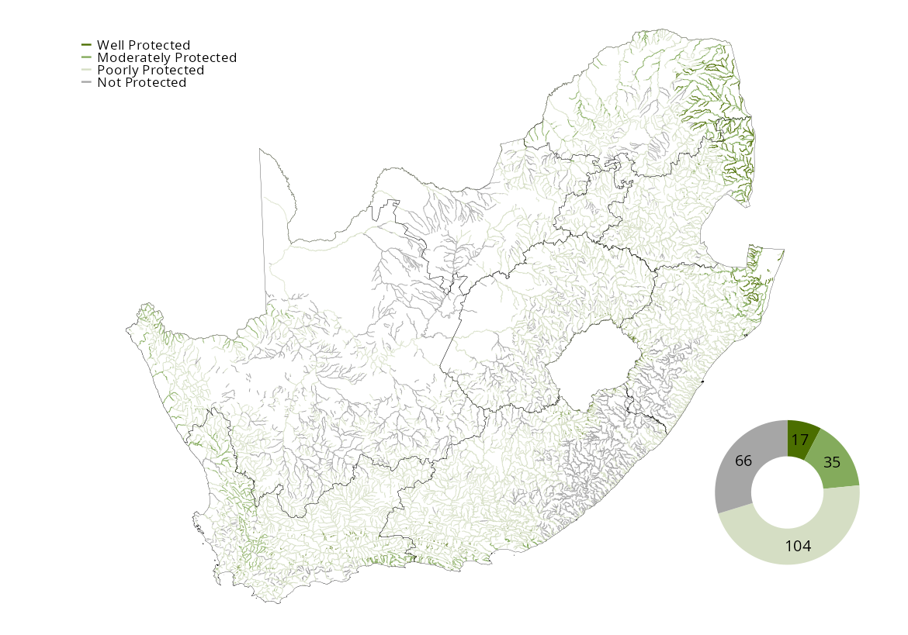
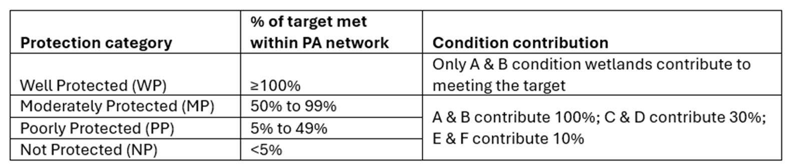

![]()
Rivers are among the least protected ecosystems in South Africa. A whole catchment approach is needed to bend the curve on river conservation, as rivers are highly connected linear ecosystems that may be impacted by human activities throughout their catchment. Rivers within Protected Areas that were assessed to be Poorly Protected due to their ecological condition may be prime targets for strategic restoration.

3%
of river ecosystem length
Well Protected
of river ecosystem length
Well Protected
8%
of 222 river ecosystem types
Well Protected
of 222 river ecosystem types
Well Protected
Approximately 14% of the country’s river length occurs in protected areas. Of the rivers within protected areas, approximately 60% of these were assessed to be in a natural or near-natural ecological condition. This is much higher than the roughly 37% of rivers in a natural or near-natural ecological condition country-wide, however, this means that only 8% of river ecosystem types in South Africa are considered Well Protected, 13% Moderately Protected and 48% Poorly Protected, while 31% are considered Not Protected.

The rivers of northern KwaZulu-Natal, Lowveld and Succulent Karoo are generally less threatened than other regions of the country. Protection levels are particularly low in the northern interior of the country, reflecting the spatial distribution of the current protected areas network.
In terms of river geomorphological zone, only 16% of the river ecosystem types within the lower foothill and mountain stream zones are Well Protected. More than half of lowland river ecosystem types are Not Protected (61%), reflecting the bias of the protected area network towards mountain versus lowland areas.

| Well Protected | Moderately Protected | Poorly Protected | Not Protected | ||
|---|---|---|---|---|---|
| Mountain stream | Count | 8 | 14 | 23 | 11 |
| Extent (km) | 1 489 | 1 721 | 3 214 | 396 | |
| Upper foothill | Count | 3 | 5 | 33 | 18 |
| Extent (km) | 1 582 | 3 017 | 54 151 | 17 822 | |
| Lower foothill | Count | 4 | 6 | 32 | 16 |
| Extent (km) | 2 158 | 5 947 | 41 675 | 25 347 | |
| Lowland river | Count | 2 | 10 | 16 | 21 |
| Extent (km) | 102 | 1 612 | 16 890 | 2 400 | |
Download the data here.
It is evident that formal protection does not guarantee biodiversity conservation as rivers are highly connected linear ecosystems that may be impacted by human activities throughout their catchment. A whole catchment and OECM approach, including conservation corridors, to river conservation is therefore required since most land-based protected areas were not designed to protect rivers.
| Not Protected | Poorly Protected | Moderately Protected | Well Protected | Total | |
|---|---|---|---|---|---|
| Critically Endangered | 16 | 24 | 7 | 2 | 49 |
| Endangered | 10 | 17 | 14 | 3 | 44 |
| Vulnerable | 19 | 25 | 7 | 1 | 52 |
| Least Concern | 21 | 38 | 7 | 11 | 77 |
| Total (n) | 66 | 104 | 35 | 17 | 222 |
Approach
Ecosystem protection level is a headline indicator of the National Biodiversity Assessment. It measures the degree to which ecosystem types are represented within South Africa’s protected area network1. Read more about this indicator on the ecosystem protection level explainer page.
Key input layers include the South African protected areas database, the river ecosystem network, and river ecological condition assessment2.
While the 2018 assessment used a standard 20% target for freshwater ecosystems[3], the current protection level target was adjusted to 30% in line with Target 3 of the Global Biodiversity Framework. This target is applied to each of the 122 river ecosystem types. Importantly, the current ecological condition of the river within the protected area is taken into consideration in the calculation, ensuring that effectiveness is accounted for. At least 30% of each river ecosystem type (i.e. the ecosystem target) needs to be in a natural or near natural ecological condition (ecological class A or B) to qualify in the Well Protected category. If this target was not met, the ecosystem type is categorised as Moderately Protected or lower, meaning that higher integrity rivers contribute more to meeting protection level targets than low integrity rivers.
Ecosystem types were assigned to one of four categories based on the percentage of the protection target met within the protected areas network, and scaled by ecological condition: Well Protected: 100% (or more) of a river ecosystem type’s target falls within the protected area network; but only rivers in an A and B condition are considered to contribute; Moderately Protected: 50% to 99% of a river ecosystem type’s target falls within the protected area network; and rivers in an A and B condition contribute 100%, rivers in a C and D condition contribute 30%, while E and F condition rivers contribute only 10%; Poorly Protected: 5% to 49% of a river ecosystem type’s target falls within the protected area network; and A and B condition rivers contribute 100%, C and D condition rivers contribute 30%, E and F condition rivers contribute 10%; Not Protected: less than 5% of a river ecosystem type’s target falls within the protected area network; and A and B condition rivers contribute 100%, C and D condition rivers contribute 30%, E and F condition rivers contribute 10%.

Changes in ecosystem protection level results since the 2018 assessment reflect revised targets and improved methodologies for global and national alignment, alongside genuine changes in protection and updates to river ecological condition.
Technical documentation
Code repository
https://github.com/askowno/EPL_riv
Key publications
Harris, L.R., Skowno, A.L., Holness, S.D., Sink, K.J., van Niekerk, L., van Deventer, H., Smith-Adao, L., Job, N., Khatieb, S., Monyeki, M. (in review). Indicators for tracking progress in effective, representative ecosystem protection.
Recommended citation
Job, N., Skowno, A., & Currie, J. 2025. River ecosystem protection level: Freshwater (inland aquatic) realm. National Biodiversity Assessment 2025. South African National Biodiversity Institute. http://nba.sanbi.org.za/.
References
1. Government of South Africa. 2003. National environmental management: Protected areas (act 57 of 2003).
2. South African Protected Areas Database. 2024. SAPAD_2024_IR_Q4.
3. Roux, D.J. et al. 2008. Improving cross-sector policy integration and cooperation in support of freshwater conservation. Conservation Biology 22: 1382–1387.